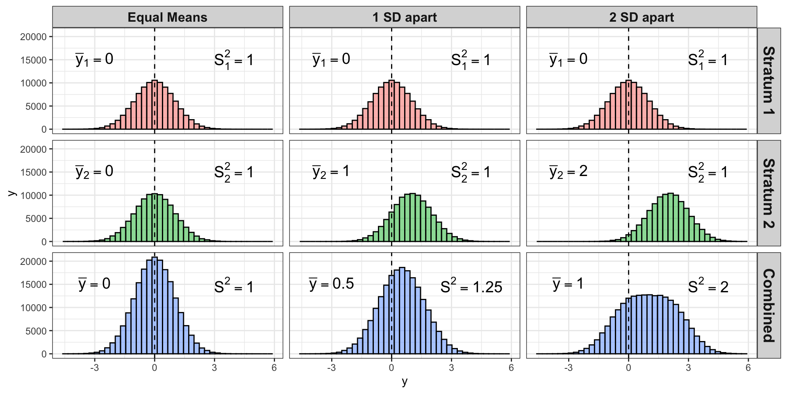

Stratified Sampling:
Allocation Methods
PUBHBIO 7225 Lecture 7
Topics
Activities
Readings
Assignments
For each stratum, \(h=1, \dots, H\), we require \(n_h \ge 2\)
(minimum of 2 units sampled per stratum)
Why is this true?
Allocation Method = how the total sample size \(n\) is distributed across the strata
Equal Allocation – \(n_h\) the same for all strata
Proportional Allocation – Allocate sample to the strata proportional to the population size in each stratum
Neyman Allocation – Allocate sample to the strata according to the estimated variability of \(y\) and the population size in each stratum
Optimal Allocation – Neyman Allocation, but also accounting for the cost to sample each unit (may vary by strata)
Equal Allocation = Number of sampled units in each stratum is the same \[n_h = n \quad \forall ~ h\]
Total sample size \(n = H n_h\) where \(n_h\) the same for all \(h\)
Proportional Allocation = Number of sampled units in each stratum is proportional to the size of the stratum \[n_h = n \frac{N_h}{N}\]
Resulting sample is EPSEM (self-weighting, all weights equal)
\(P(\)selection for unit \(j\) in stratum \(h)=\pi_{hj} = n_h/N_h = n/N\)
Sample weights: \(w_{hj} = N/n\)
Formula for the variance of the sample mean, \(\bar{y}_{str}\), can thus be simplified: \[\begin{flalign} V_{prop}(\bar{y}_{str}) &= \sum_{h=1}^H \left(\frac{N_h}{N}\right)^2 \left(1-\frac{n_h}{N_h}\right)\frac{S_h^2}{n_h} = &% \sum_{h=1}^H \left(\frac{N_h}{N}\right)^2 \left(1-\frac{n \frac{N_h}{N}}{N_h}\right) \frac{S_h^2}{n \frac{N_h}{N}} \\ %&= \sum_{h=1}^H \left(\frac{N_h}{N}\right) \fpcpar \frac{S_h^2}{n} %\\ %&= \sum_{h=1}^H \left(\frac{N_h}{N}\right) \frac{S_h^2}{n} - \frac{1}{N} \sum_{h=1}^H \frac{N_h}{N} S_h^2 \end{flalign}\]
Comparing Allocation Methods (Part 1)
When the strata are large enough, the theoretical variance of \(\bar{y}_{str}\) under proportional allocation is at most as large as the variance of the sample mean from an SRS with the same number of observations.
Note that this only holds for proportional allocation
The gain in precision (over SRS) will be larger when the \(\bar{y}_{hU}\) differ from \(\bar{y}_U\) more
Fact: when \(Y\) comes from a mixture of two distributions, \(V(Y)\) is a weighted average of the two variances \((\sigma^2_1,\sigma^2_2)\) plus an increase due to difference in the means \((\mu_1, \mu_2)\):
\[V(Y) = p_1 \sigma^2_1 + (1-p_1) \sigma^2_2 + p_1 (1-p_1) (\mu_1 - \mu_2)^2\]
where \(p_1\) = fraction of the population from first distribution
The further apart the means are, the bigger the variance of \(y\) if you ignore strata \((S^2)\)
Thus, stratification helps if the stratification variable(s) are related to the survey outcome \(\mathbf{y}\)

| \(\mu_1\) | \(\mu_2\) | \(S_1^2\) | \(S_2^2\) | \(S^2\) | \(V_{srs}(\bar{y})\) | \(V_{prop}(\bar{y}_{str})\) | Ratio (SRS/Stratified) |
|---|---|---|---|---|---|---|---|
| 0 | 0 | 1 | 1 | 1 | 0.001 | 0.001 | 1 |
| 0 | 0.5 | 1 | 1 | 1.0625 | 0.0010625 | 0.001 | 1.0625 |
| 0 | 1 | 1 | 1 | 1.25 | 0.00125 | 0.001 | 1.25 |
| 0 | 1.5 | 1 | 1 | 1.5625 | 0.0015625 | 0.001 | 1.5625 |
| 0 | 2 | 1 | 1 | 2 | 0.002 | 0.001 | 2 |
Example calculations (2nd row of table above):
\(S^2 = \frac{N_1}{N}S_1^2 + \frac{N_2}{N}S_2^2 + \frac{N_1}{N}\frac{N_2}{N} (\mu_1-\mu_2)^2= 0.5(1) + 0.5(1) + (0.5)(0.5)(0-0.5)^2 = 1.0625\)
\(V_{srs}(\bar{y}) = \frac{S^2}{n} = \frac{1.0625}{1000} = 0.0010625\)
\(V_{str}(\bar{y}_{str}) = \frac{N_1}{N}\frac{S_1^2}{n} + \frac{N_2}{N}\frac{S_2^2}{n} = 0.5\left(\frac{1}{1000}\right) + 0.5\left(\frac{1}{1000}\right) = 0.001\)
What about proportions? Exact same story:
| \(p_1\) | \(p_2\) | \(S_1^2\) | \(S_2^2\) | \(S^2\) | \(V(\bar{y})\) | \(V_{prop}(\bar{y}_{str})\) | Ratio (SRS/Stratified) |
|---|---|---|---|---|---|---|---|
| 0.5 | 0.5 | 0.25 | 0.25 | 0.25 | 0.0025 | 0.0025 | 1 |
| 0.4 | 0.6 | 0.24 | 0.24 | 0.25 | 0.0025 | 0.0024 | 1.042 |
| 0.3 | 0.7 | 0.21 | 0.21 | 0.25 | 0.0025 | 0.0021 | 1.19 |
| 0.2 | 0.8 | 0.16 | 0.16 | 0.25 | 0.0025 | 0.0016 | 1.5625 |
| 0.1 | 0.9 | 0.09 | 0.09 | 0.25 | 0.0025 | 0.0009 | 2.78 |
Note that these results are for the theoretical sampling variance (over repeated sampling)
In a single pair of samples (one SRS, one stratified) you might not see the benefit – especially if the stratified sample selected had large within-stratum sample variances
Also note that most surveys have more than one key outcome, \(y\)!
Compromise necessary to attempt to achieve improved precision across multiple \(y\)
We can derive an expression for the comparison of stratified sampling with proportional allocation compared to SRS to prove the gain of stratified sampling.
To do this, we will again lean on ideas you have seen before in ANOVA – sums of squares!
\[\begin{flalign} \text{Total Sum of Squares} &= \text{Between Strata} + \text{Within Strata} & \\ \text{\small \emph{each obs.\ to overall mean}} &= \text{\small \emph{stratum mean to overall mean}} + \text{\small \emph{each obs to its stratum mean}} \\ \sum_{h=1}^H \sum_{j=1}^{N_h} (y_{hj}-\bar{y}_U)^2 &= \sum_{h=1}^H \sum_{j=1}^{N_h} (\bar{y}_{hU}-\bar{y}_U)^2 + \sum_{h=1}^H \sum_{j=1}^{N_h} (y_{hj}-\bar{y}_{hU})^2 \\ \text{\textcolor{red}{by definition of }} & \textcolor{red}{S^2, S_h^2, \text{ and simplifying a bit:}} \\ (N-1) S^2 &= \sum_{h=1}^H N_h (\bar{y}_{hU}-\bar{y}_U)^2 + \sum_{h=1}^H (N_h-1) S_h^2\\ \frac{(N-1)}{N} S^2 &= \sum_{h=1}^H \frac{N_h}{N} (\bar{y}_{hU}-\bar{y}_U)^2 + \sum_{h=1}^H \frac{N_h-1}{N} S_h^2 \end{flalign}\]
\[\begin{flalign} \text{\textcolor{red}{assuming }} \textcolor{red}{(N-1)~} & \textcolor{red}{\approx N \text{ and } (N_h-1) \approx N_h:} & \\ S^2 &= \sum_{h=1}^H \frac{N_h}{N} (\bar{y}_{hU}-\bar{y}_U)^2 + \sum_{h=1}^H \frac{N_h}{N} S_h^2\\ \text{\textcolor{red}{now make that left }} & \textcolor{red}{\text{side look like the SRS variance by multiplying both sides by } \left(1-\frac{n}{N}\right)\frac{1}{n}:}\\ \left(1-\frac{n}{N}\right)\frac{1}{n} S^2 &= \left(1-\frac{n}{N}\right)\frac{1}{n} \sum_{h=1}^H \frac{N_h}{N} (\bar{y}_{hU}-\bar{y}_U)^2 + \left(1-\frac{n}{N}\right)\frac{1}{n} \sum_{h=1}^H \frac{N_h}{N} S_h^2\\ \left(1-\frac{n}{N}\right)\frac{S^2}{n} &= \left(1-\frac{n}{N}\right)\frac{1}{n} \sum_{h=1}^H \frac{N_h}{N} (\bar{y}_{hU}-\bar{y}_U)^2 + \sum_{h=1}^H \left(1-\frac{n}{N}\right)\left(\frac{N_h}{N}\right) \frac{S_h^2}{n}\\ V_{srs}(\bar{y}) &= \underbrace{\left(1-\frac{n}{N}\right)\frac{1}{n} \sum_{h=1}^H \frac{N_h}{N} (\bar{y}_{hU}-\bar{y}_U)^2}_{\geq 0} +~V_{prop}(\bar{y}_{str}) \\ & \textcolor{blue}{\rightarrow V_{prop}(\bar{y}_{str}) \leq V_{srs}(\bar{y})} \end{flalign}\]
Neyman Allocation = allocation that minimizes \(V(\bar{y}_{str})\), the variance of the overall mean of \(y\), for a fixed total sample size, \(n\) \[n_h = n \left( \frac{N_h S_h}{\sum_{l =1}^H N_l S_l} \right)\]
Number of sampled units in each stratum is proportional to the size of the stratum \((N_h)\) times the standard deviation of \(y\) in the stratum \((S_h)\)
Sample more of a stratum if it has a large within-stratum variance – to compensate for the heterogeneity
First determined by Alexander Chuprov (1923), rediscovered by Neyman (1934). Poor Chuprov!
Math/Stat Note: The derivation of the \(n_h\) formula under Neyman Allocation uses the method of Lagrange multipliers (calculus) – which is outside the scope of this class – I encourage any interested students to refer to the additional handout on Carmen
Ugly algebra to simplify the variance of the sample mean under Neyman Allocation: \[\begin{flalign} V_{Neyman}(\bar{y}_{str}) &= \sum_{h=1}^H \left(\frac{N_h}{N}\right)^2 \left(1-\frac{n_h}{N_h}\right)\frac{S_h^2}{n_h} = \sum_{h=1}^H \left(\frac{N_h}{N}\right)^2 \frac{S_h^2}{n_h} - \sum_{h=1}^H \left(\frac{N_h}{N}\right)^2 \frac{S_h^2}{N_h} & \\ &= \sum_{h=1}^H \left(\frac{N_h}{N}\right)^2 \frac{S_h^2}{n \left( \frac{N_h S_h}{\sum_{l =1}^H N_l S_l} \right)} - \frac{1}{N^2} \sum_{h=1}^H N_h S_h^2\\ &= \frac{1}{n}\frac{1}{N^2} \sum_{h=1}^H N_h S_h \sum_{l =1}^H N_l S_l - \frac{1}{N^2} \sum_{h=1}^H N_h S_h^2 \\ &= \frac{1}{n}\frac{1}{N^2} \left(\sum_{h=1}^H N_h S_h\right)^2 - \frac{1}{N^2} \sum_{h=1}^H N_h S_h^2\\ &= \frac{1}{n} \left(\sum_{h=1}^H \frac{N_h}{N} S_h\right)^2 - \frac{1}{N} \sum_{h=1}^H \frac{N_h}{N} S_h^2 \end{flalign}\]
Comparing Allocation Methods (Part 2)
If \(S_h\) are all equal and correctly specified, then Neyman allocation is the same as proportional allocation
If \(S_h\) are correctly specified, (theoretical) variance from Neyman allocation is always less than or equal to the (theoretical) variance from proportional allocation (proof next page)
Combining with result about proportional allocation vs. SRS, assuming the \(S_h\) are correctly specified, we have that: \[V_{Neyman}(\bar{y}_{str}) \le V_{prop}(\bar{y}_{str}) \le V_{srs}(\bar{y}_{str})\]
Remember that these are the theoretical variances…in practice the estimated variances from two samples from the same population might not have this property
However, note that:
\[\begin{flalign} V_{prop}(\bar{y}_{str}) &- V_{Neyman}(\bar{y}_{str}) & \\ &= \left[ \sum_{h=1}^H \left(\frac{N_h}{N}\right) \frac{S_h^2}{n} - \frac{1}{N} \sum_{h=1}^H \frac{N_h}{N} S_h^2\right] - \left[\frac{1}{n} \left(\sum_{h=1}^H \frac{N_h}{N} S_h\right)^2 - \frac{1}{N} \sum_{h=1}^H \frac{N_h}{N} S_h^2 \right] \\ &= \sum_{h=1}^H \left(\frac{N_h}{N}\right) \frac{S_h^2}{n} - \frac{1}{n} \left(\sum_{h=1}^H \frac{N_h}{N} S_h\right)^2 \\ &= \frac{1}{n} \left[ \sum_{h=1}^H \frac{N_h}{N} S_h^2 - \left(\sum_{h=1}^H \frac{N_h}{N} S_h\right)^2 \right]\\ & \textcolor{red}{\text{define } \bar{S} = \sum_{h=1}^H\frac{N_h}{N} S_h = \text{weighted average SD}} \\ &= \frac{1}{n} \left[ \sum_{h=1}^H \frac{N_h}{N} S_h^2 - \bar{S}^2 \right] = \ldots \text{algebra}\ldots = \frac{1}{n}\sum_{h=1}^H \frac{N_h}{N} (S_h - \bar{S})^2 \ge 0 \\ & \textcolor{blue}{\rightarrow V_{Neyman}(\bar{y}_{str}) \leq V_{prop}(\bar{y})} \end{flalign}\]
Optimal Allocation = allocation that minimizes \(V(\bar{y}_{str})\), the variance of the overall mean of \(y\), for a fixed total sample size, \(n\), and with a fixed cost per unit, \(c_h\) \[n_h = n \left( \frac{\frac{N_h S_h}{\sqrt{c_h}}}{\sum_{l =1}^H \frac{N_l S_l}{\sqrt{c_l}}} \right)\]
Number of sampled units in each stratum is proportional to the size of the stratum \((N_h)\), the standard deviation of \(y\) in the stratum \((S_h)\), and the reciprocal of the square root of the cost per unit of obtaining \(y\) in each stratum \((c_h)\)
Fixed total cost \(\displaystyle c = c_0 + \sum_{h=1}^H c_h n_h\), where \(c_0\) = baseline costs
Sample more of a stratum if it has a large within-stratum variance and if it is inexpensive
If costs per unit \((c_h)\) are same in all strata, optimal allocation = Neyman allocation
\[\begin{aligned} V_{opt}(\bar{y}_{str}) &= \sum_{h=1}^H \left(\frac{N_h}{N}\right)^2 \left(1-\frac{n_h}{N_h}\right)\frac{S_h^2}{n_h} \\ &= \sum_{h=1}^H \left(\frac{N_h}{N}\right)^2 \frac{S_h^2}{n_h} - \sum_{h=1}^H \left(\frac{N_h}{N}\right)^2 \frac{S_h^2}{N_h} \\ &= \sum_{h=1}^H \left(\frac{N_h}{N}\right)^2 \frac{S_h^2}{n \left( \frac{\frac{N_h S_h}{\sqrt{c_h}}}{\sum_{l =1}^H \frac{N_l S_l}{\sqrt{c_l}}} \right)} - \frac{1}{N^2} \sum_{h=1}^H N_h S_h^2\\ &= \frac{1}{n}\frac{1}{N^2} \sum_{h=1}^H N_h S_h \sqrt{c_h} \sum_{l =1}^H \frac{N_l S_l}{\sqrt{c_l}} - \frac{1}{N^2} \sum_{h=1}^H N_h S_h^2\\ %&= \frac{1}{n}\frac{1}{N^2} \sum_{h=1}^H \frac{N_h^2 S_h^2}{\left( \frac{\frac{N_h S_h}{\sqrt{c_h}}}{\sum_{l =1}^H \frac{N_l S_l}{\sqrt{c_l}}} \right)} - \frac{1}{N^2} \sum_{h=1}^H N_h S_h^2\\ %&= \frac{1}{n}\frac{1}{N^2} \left(\sum_{h=1}^H N_h S_h\right)^2 - \frac{1}{N^2} \sum_{h=1}^H N_h S_h^2 \end{aligned}\]
(Honestly, we will never use this formula)
PUBHBIO 7225